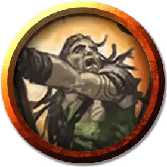

Преследователь с Кольца руин
Rubblebelt Stalker
Средний Гуманоид (Любой расы), хаотично-нейтральный

Класс Доспеха 14 (доспех из обломков)
Хиты 11 (2к8 + 2)
Скорость 30 футов, лазая 30 футов
| мод | спас | ||
|---|---|---|---|
| СИЛ | 10 | +0 | +0 |
| ЛОВ | 15 | +2 | +2 |
| ТЕЛ | 12 | +1 | +1 |
| мод | спас | ||
|---|---|---|---|
| ИНТ | 10 | +0 | +0 |
| МДР | 14 | +2 | +2 |
| ХАР | 8 | −1 | −1 |
Навыки Атлетика +2, Восприятие +4, Скрытность +4
Чувства пассивное Восприятие 14
Языки Любой 1 (обычно Общий)
Опасность 1/2 (100 опыта)
Бонус мастерства +2
Особенности
Засада. В своём первом ходу преследователь совершает с преимуществом броски атаки по существам, которые ещё не совершали ход.
Ловкий побег. Преследователь может в каждом своем ходу бонусным действием совершать действие Засада или Отход.
Исследователь руин. Преследователь совершает с преимуществом проверки Ловкости (Скрытность), совершаемые для того чтобы спрятаться среди руин и его скорость не уменьшается от труднопроходимой местности, состоящей из булыжника.
Осадное чудовище. Преследователь наносит двойной урон объектам и сооружениям.
Действия
Мультиатака. Преследователь совершает три атаки своим коротким мечом.
Короткий меч. . Рукопашная атака оружием: +4 к попаданию, досягаемость 5 футов, одна цель. Попадание: 5 (1к6 + 2) колющего урона.
Описание
Преследователи с Кольца руин — разведчики и застрельщики кланов Груулов. Они превосходно передвигаются по сложной местности, пробираясь через коварные руины или карабкаясь по крышам. Они предпочитают тактику засад и избегают столкновений с более сильными силами, полагаясь на свою превосходную мобильность, чтобы успеть сбежать.